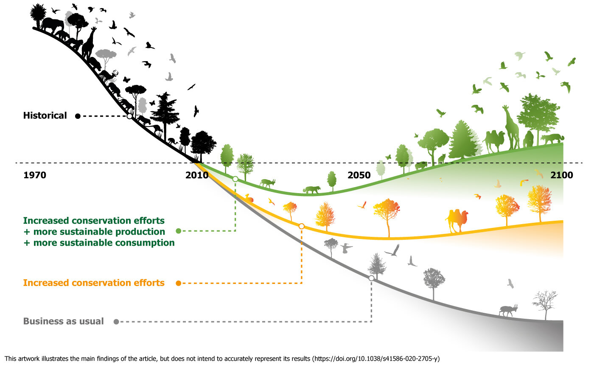
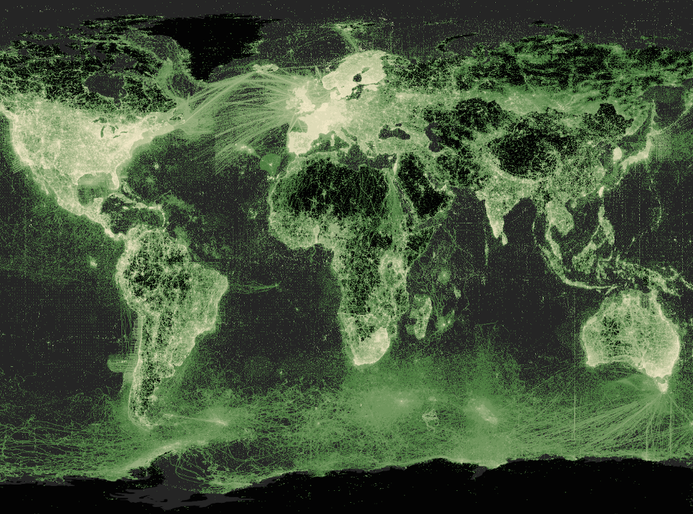
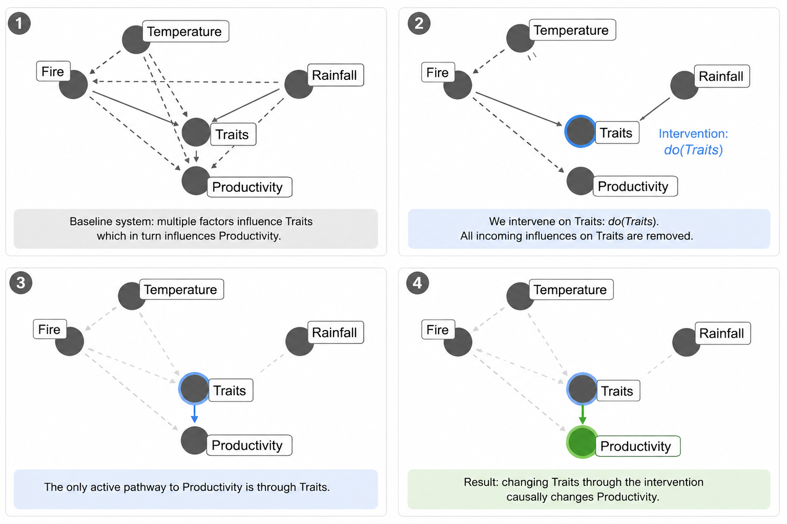
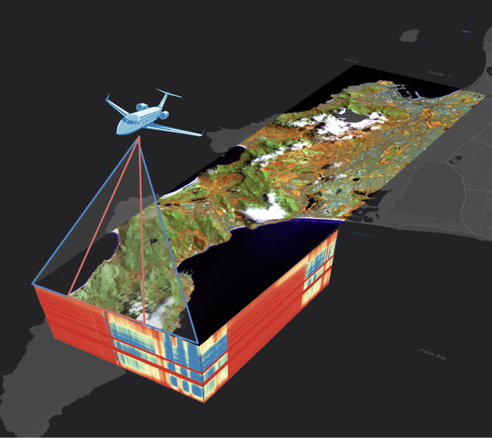
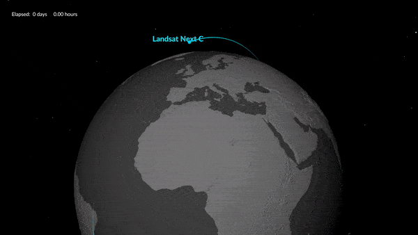
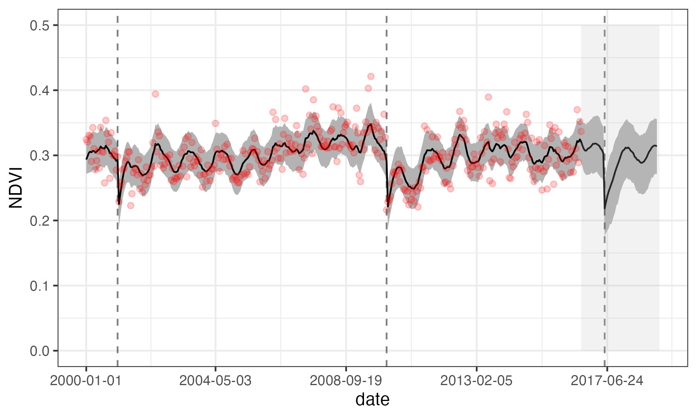
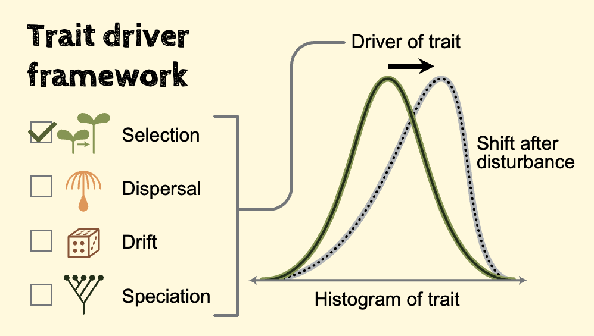

1 + 1[1] 2Simons Collaboration on Biodiversity Trajectories and Causal understanding of Ecoevolutionary dynamics

Diversity

Observation

Inference

Diversity
Trait-Based Ecology
Provides mechanistic links between scales from organism to ecosystem
Observation
Satellite Remote Sensing

Provides repeated observations at scales from metres to the globe
Inference
Modern Causal Statistics

Allows us to test causation at the scale of observations
Trait maps from airborne imaging spectroscopy


Trait time-series from multispectral satellites


Modelling and forecasting trait time-series

Using causal statistics to text drivers and theory at scale
Describing eco-evolutionary dynamics by integrating trait-based and metabolic scaling theories

Synthesizing theory across physiology, population biology, evolutionary biology, community ecology, ecosystem ecology, and global ecology.
Jasper Slingsby
Short description of its ecological role or key trait.
Ryan Blanchard
Short description of its ecological role or key trait.
Res Altwegg
Short description of its ecological role or key trait.
Samukelisiwe Msweli
Short description of its ecological role or key trait.
Patrick O’Farrell
Short description of its ecological role or key trait.
Andrew Skowno
Short description of its ecological role or key trait.
Erin Hestir
Short description of its ecological role or key trait.
Cory Merow
Short description of its ecological role or key trait.
Efthymios Nikolopoulos
Short description of its ecological role or key trait.
Maria Santos
Short description of its ecological role or key trait.
Philip Townsend
Short description of its ecological role or key trait.
Adam Wilson
Short description of its ecological role or key trait.

A Slide with Big Text
Quarto enables you to weave together content and executable code into a finished presentation. To learn more about Quarto presentations see https://quarto.org/docs/presentations/.
When you click the Render button a document will be generated that includes:
When you click the Render button a presentation will be generated that includes both content and the output of embedded code. You can embed code like this:
1 + 1[1] 2Left column
Middle column
Right column